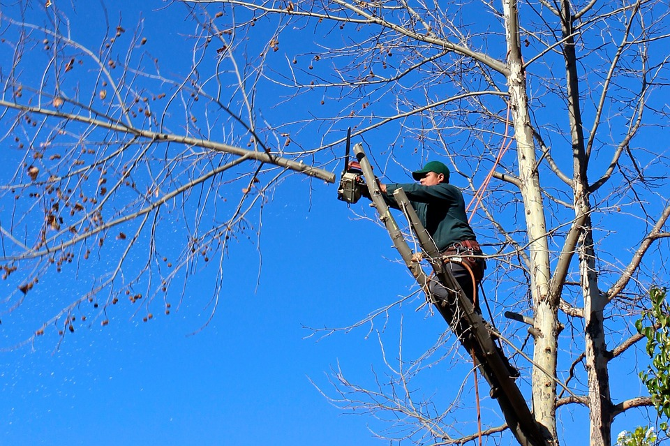

You would think that there would be regular follow-ups to taking care of trees in the city. In many cases, that's not true. We can look at a related example of caring for trees, with the hobby of maintaining trees known as the art of bonsai.
Bonsai: a potted plant (such as a tree) dwarfed (as by pruning) and trained to an artistic shape; also :the art of growing such a plant
source: Merriam-Webster Dictionary
Bonsai gives a foundation of how most trees and plants can be maintained. It helps us see how trees and plants can be cared for on both a small and large scale. For more information, check out the link below.
source: The Art of Bonsai
Leaving out the fact that only tree branches will be pruned, we seem to forget what happens below the surface. There are certain areas with guidelines to pruning trees. Some will tackle pruning both the roots and the branches, while others will concentrate on the branches alone. There are ways you should prune trees, and the result will be for the trees to have a better appearance, better health, as well as to grow only so much and so far. There's something else that should be addressed when pruning trees, especially the roots. There are ways to do it, and there are reasons for doing it. Below are a few sources for pruning trees.
The videos below show a few examples of how tree roots can be pruned. The first video, you most likely won't see in urban areas.
What most of us don't always notice, is the small space where a tree is planted, and is set to stay and grow, until it's time to get rid of it. That space for most trees, on the surface seems adequate, but it's really not. As far as the depth where the tree roots will spread, it's not very deep. That's not much room for a tree. Once it becomes larger than what it was when it was initially planted, it will need much more space to grow. Because the space is so small, pruning the roots may not be a possibility without harming the tree.
source: Tree Planting Specifications Check List
The roots will spread further than the enclosed space that the tree was initially planted. If the tree trunk is almost as big (or bigger) than its planted space, then that will be a problem.
If you leave tree roots unattended, to continuously grow, they will get out of control. The bigger the tree grows, the more the roots will expand.
For a different example, below is a video, of just how strong tree roots can be.